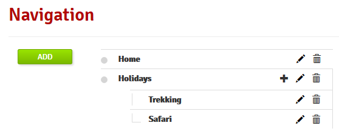

Applications
Since 7.3, some changes have been made on the default layout.
Those changes live in the layout.css page asset and allow us to better handle the content layout of the page displayed.
Another consequence is that it removes a margin which was automatically added at the top of each pages.
With Bonita you can build an application that exactly meets your needs and interacts with processes. Instead of the standard, generic, process-centered Bonita Portal, you can create a business-centered web application that provides access to processes. You can modify the application whenever you want, and users will see the changes immediately. This means that you can rapidly adapt an application to your changing business needs or to react to user feedback.
Application definition
An application is a collection of pages and processes that meets a business need. It contains some or all of the following:
- Pages: the user interface components of the application. An application must contain at least one page.
- Processes: the logic execution components of the application. An application must contain at least one process. A process can contain forms, which are the user interface of the process.
- REST API extensions: called from pages or forms to retrieve data to be presented to the user.
- Layout: the frame in which application pages are displayed.
- Theme: the appearance of application pages, including fonts and colors.
Application prerequisites
An application requires the following to be available:
- The business data model (BDM) must be deployed
- The organization data must be deployed, so that application users can log in.
- The access authorizations that grant users access to the application resources must be defined.
Developing an application
When developing an application there are three independent factors to consider:
- User interaction: the application interface that users see, where they read or enter information.
- Logic: the processes that update data based on user actions or on other factors.
- Data: the information displayed to users and manipulated by the processes.
If you are developing an application from scratch, start with what users need, then define the data model, then create the processes that will manipulate the data. If you are creating an application that will use existing processes, start by considering user needs, then adjust the existing data model and processes as required to incorporate them into the application.
To integrate a process into an application, you specify a link in an application page. This can either be a link to display a processes instantiation form or a task form, or it can be an API call to start a process or run a task without displaying a form.
Defining a new application
Since Bonita 7.5.0, the definition of applications can be done from the studio, which makes it more straightforward to develop and package with other application artifacts. For Enterprise, Efficiency and Performance editions, a graphical editor is provided on top of xml source code. For more details, go to Application descriptors
When you have developed all the resources that are used in an application, you are ready to define the application itself. The application builder is a graphical interface in Bonita Portal for specifying the application pages and defining the menus. There is a default application home page that you can adapt or replace.
To define an application, you need to be logged in to Bonita Portal using the Administrator profile.
You can also create a custom profile to use for creating an application. This profile must have access to the Applications page to create the application. To test the application, the user currently logged in must have the profile defined in the application.
- In the menu bar, click Applications. The Applications list page is displayed, showing the applications already defined.
- Click New. The Create an Application popup is displayed.
- In the popup, specify information about the application:
- Display name: The user-friendly name that will be used in Bonita Portal to identify the application.
- URL: The URL of the home page of the application.
- Version: The version number of the application. By default, this is set to 1.0, but you can set it to any alphanumeric string.
- Profile: Select the profile that users must have to access the application. The drop-down list includes all the available profiles, including custom profiles.
- Description: A text description of the application.
- Click Create.
The new application is created, with the information that you specified. However, at this stage the application contains only the default home page. You must specify the pages in the application, and then define the navigation.
Note: When you define the URL token for an application, you cannot use “API”,”content” or “theme” (case insensitive). Those words are reserved for internal use.
Specifying application layout (Subscription editions)
Each application is associated with a layout that defines the main frame of this application.
To specify the application layout:
- In the menu bar, click Applications. The Applications list page is displayed.
- Click the edit icon (…) for the application you want to edit. The application details page is displayed.
- Go to the Look & Feel zone.
- Click in the name of the current layout.
- Choose the new layout from the drop down list. Layouts must be previously deployed.
- Click on the validate button.
Specifying application theme (Subscription editions)
Each application is associated with a theme that defines the application appearance. All pages developed with the UI Designer will automatically benefit of application theme.
If you develop pages by yourself you need to include the following line in your source to get theme working <link rel="stylesheet" href="../theme/theme.css">.
To specify the application theme:
- In the menu bar, click Applications. The Applications list page is displayed.
- Click the edit icon (…) for the application you want to edit. The application details page is displayed.
- Go to the Look & Feel zone.
- Click in the name of the current theme.
- Choose the new theme from the drop down list. Themes must be previously deployed. By default, there are six Bootstrap based themes.
- Click on the validate button.
Specifying application pages
When you specify application pages, you create a mapping between the application and the pages it contains. The pages themselves must already exist.
To specify the application pages:
- In the menu bar, click Applications. The Applications list page is displayed.
- Click the edit icon (…) for the application you want to edit. The application details page is displayed.
- Go to the Pages zone. You can add a page by clicking Add and choosing a page from the popup list, and define the URL token for this page. You can remove a page by clicking the trashcan icon for that page. The pages are listed in alphabetical order.
- Select the page that will be the application home page. The default home page is selected by default. To change this, click the Home icon on the row of the relevant page.
Note: When you define the URL token for a page, you cannot use “API”,”content” or “theme” (case insensitive). Those words are reserved for internal use.
Defining application navigation
When you specify the navigation, you define the menu names and structure, and the pages that menu items point to. The menu hierarchy is limited to two levels, for usability. At the top level, you can specify two types of item:
- A one-page menus is clickable and points to a page.
- A multi-page menu is not clickable but is the container for a collection of one-page menu items.
To specify the application navigation:
- In the menu bar, click Applications. The Applications list page is displayed.
- Click the edit icon (…) for the application you want to edit. The application details page is displayed.
- Go to the Navigation zone. For example:

- Specify the menu structure. At the top level, you can define one-page menus that point directly to pages (like Home in the illustration), or multi-page menus (like Holidays).
If you define a multi-page menu, you can add menu items (like Trekking and Safari).
- To add a top-level one-page menu, click Add, then in the popup, click One-page menu, specify the name for the menu, select the page, and click Add.
- To add a top-level multi-page menu, click Add, then in the popup, click Multi-page menu, specify the name for the menu, and click Add.
- To add an item to a multi-page menu, click the plus icon beside the menu name, specify the name for the menu item, choose the page from the popup, and click Add.
- To delete a menu or menu item, click the trashcan icon. If you delete a menu that has children, the child entries are automatically deleted from the navigation.
- To reorder menu items, drag and drop them.
Deploying an application
To deploy an application, you use the Bonita Portal. You need to import (or create in the Portal), the following in this order:
- Organization then profiles
- API extensions then pages, layout, themes
- Business data model then processes
- Application definition
Deploying an application means exporting it from the Portal where you developed it and importing it into another for production.
When you export an application, it includes the following:
- The application metadata
- The layout name
- The theme name
- The navigation definition
- The mapping of pages to the navigation
It does not include the pages, layout, or theme themselves, the business data model, the profile definition, the processes, the organization, or the authorization settings. These must all be deployed separately.
Export applications
To export an application:
- Go to the Applications page. The list of applications is displayed.
- Select the application you want to export.
- Click the Export icon.
An XML file, Application_Data.xml, is exported.
Import applications
When you import an application, you import the mapping of the application to pages. For the import to be successful, any pages, layout and theme must already be loaded. If you are setting up a new production environment by importing all the data, import it in the following order:
- organization
- profiles
- API extensions
- pages
- layouts
- themes
- business data model
- processes (including forms)
- applications
You will also need to apply any custom authorization definitions.
To import applications:
- Go to the Applications page. The list of applications is displayed.
- Click Import.
- Specify the
Application_Data.xmlfile to upload. - Click Import.
The file is imported and checked. A popup reports the status of the import. It shows the number of applications successfully imported, partially imported, or with errors. If the profile associated with an application is not defined, the application is created without any associated profile. If a page associated with the application is not present, the application is created without this page or the related navigation elements. If the specified layout and/or theme is not present, the application is created with the default layout and theme.
Updating an application
There are two aspects to updating an application: changing the application definition and changing the resources.
Updating an application definition
- In the menu bar, click Applications. The Applications list page is displayed.
- Click the Edit icon (…) for the application you want to edit. The application details page is displayed. From this page, you can edit the application metadata, layout, theme, pages, and navigation.
- To edit the metadata, click the Edit button. In the popup, modify the information about the application, then click Save.
- To edit the layout, see Specifying application layout.
- To edit the theme, see Specifying application theme. Note that the end user will see this modification with a delay (due to the cache policy)
- To edit the pages, go to the Pages zone. You can add a page by clicking Add. You can remove a page by clicking the trashcan icon for that page. Note that if you remove a page, the related menu items are automatically removed from the navigation.
- To edit the navigation, go to the Navigation zone. You can add a menu or menu item by clicking Add. You can remove a menu or menu item by clicking the trashcan icon for that page. You can reorder menus and menu items by dragging and dropping them.
Updating application resources
Some resources of an application can be updated live without needing to stop the processes or require users to log out of the application. Live update is primarily intended for rapid deployment of updates in a pre-production test environment. It can be used to deploy updates in a production environment, but in most production environments applications and their components are versioned, so a planned roll-out is more typical.
You can use live update for the following resources: